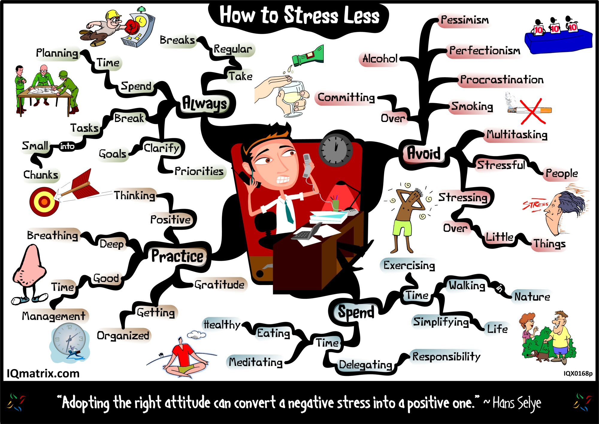
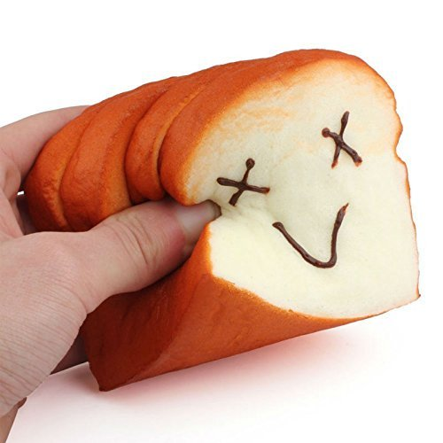
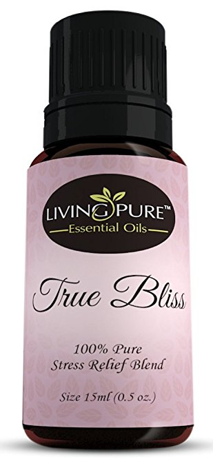
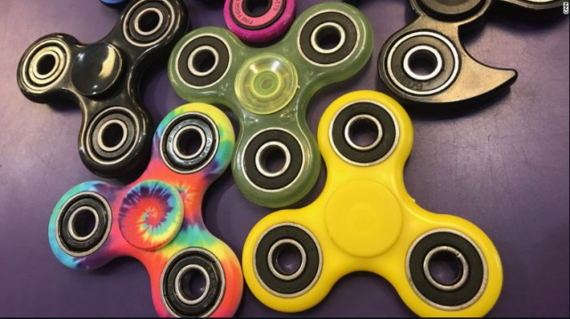

How To Deal With Homework Better
Purchase these stress-relieve goods:



There are several ways to make homework less painful for the students.
- The rule of 10 minutes of homework per grade level should be followed, if not, the link between homework and achievement drop, stress increases, and learning declines. Parents should be checking if their kids aren’t over scheduled and they get enough sleep.
- Just because a lot of homework is assigned doesn't necessarily mean it is intellectually demanding. So teachers are thinking list of questions before assigning homework, some including: What is the purpose of the assignment? How long will it take an average student to do it? Is it clear? Is the homework valuable and meaningful to students? etc.
- Parents shouldn’t help with homework, let teachers intervene if the student isn’t doing homework correctly or regularly,” Pope says. Parents can help, but children should follow their working style, to work in a silent place, listening to music, etc.
- Students may try predicting how long it will take them to finish each assignment. Making sufficient plans should help them finish their project work little by little instead of pushing all the work to the last minute.
- tudents should overcome procrastination, they should control themselves or parents should give them punishments if they don’t start their work at this time. Parents checking in if they are on-task and how long they have remaining might help some students.
- Find a productive homework space. Students should be working in an area that allows them to focus fully on the assignment, it can be anywhere in their home that is quiet and free from distractions like televisions.
There are also many ways that teenagers find how to relieve stress, and since the amount of homework is a primary stressor, students should find a time to relieve their stress.
So here's a list of things people do to relieve their stress:
1-Chew gum
Research proves multiple ways in which music can help relieve stress
2-Drink Tea
One study found that drinking black tea leads to lower post-stress cortisol levels and greater feelings of relaxation.
3-Yoga/Stretch
The combination of deep breathing techniques and poses makes this activity work to reduce stress, too.
4-Run
Can offer immediate relief in a stressful situation. Getting your blood moving releases endorphins and can improve your mood almost instantaneously.
5-Aroma
Studies suggest aromatherapy can be a good way to relieve stress. Certain aromas (like lavender) have been consistently shown to reduce stress levels
6-Squishy
Squeezing and releasing the grip it activates and relax the muscles of your hand and wrist. When this is repeated, it helps to alleviate tension and stress.
7-Take a Nap
Napping has been shown to reduce cortisol levels, which aids in stress relief.
8-Breath Deeply
Taking a deep breath has been shown to lower cortisol levels, which can help reduce stress and anxiety.
9-Listen To Music
Music can help relieve stress, from triggering biochemical stress reducers to assisting in treating stress associated with medical procedures.
10-Laugh it off
Laughter can reduce the physical effects of stress (like fatigue) on the body
11-Homework Schedules
Trying to keep a schedule for all the homework you have every night can keep you organized and on track.
12-Fidget Spinners
Some claims that the fidget spinner has health benefits like easing stress, post-traumatic stress disorder (PTSD), anxiety and attention deficit hyperactivity disorder (ADHD).